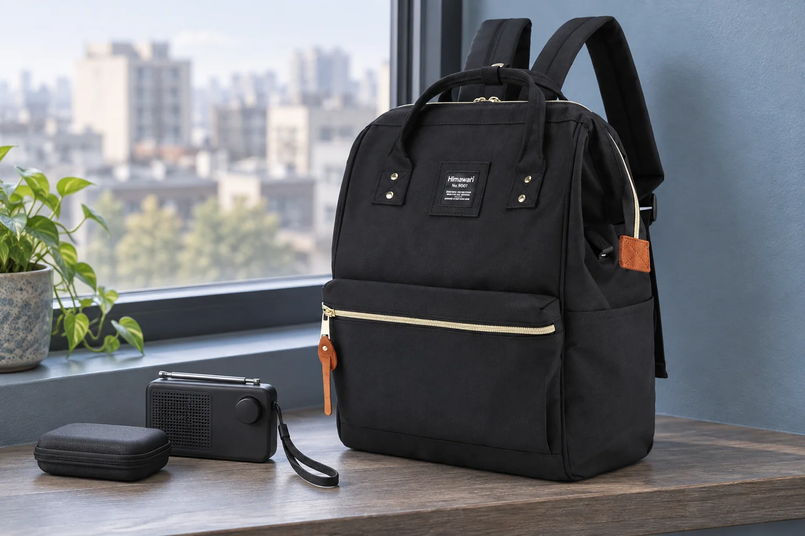

휴대용 라디오를 백팩에 넣기 전: 안테나부터 제자리로

창가에서 라디오를 듣다가 다음 장소로 이동합니다. 본체는 작아도 길게 뽑은 안테나는 그대로입니다. 가방에 넣은 뒤 지퍼로 눌러 접으려 하지 말고, 기기를 손에 들고 정리한 다음 백팩을 여는 순서로 바꿔보세요.
소리가 작아졌는지보다 전원을 확인합니다
음량을 낮추는 것과 전원을 끄는 동작은 기기에 따라 다릅니다. 본인의 라디오에서 전원을 끄는 방법을 확인하고, 이어폰이나 외부 전원선을 연결했다면 운반 전에 어떻게 분리해야 하는지도 사용 안내에서 살펴보세요. 케이블을 잡아당겨 본체째 가방으로 옮기지 않고, 기기는 따로 받쳐 정리합니다.
가늘게 뽑힌 안테나를 잡아 꺾지 않습니다
안테나가 있는 라디오라면 수납하기 전에 원래의 보관 위치로 돌려놓습니다. Sony ICF-J1 사용 설명서는 안테나 방향을 조절할 때 아래쪽을 잡고, 끝을 잡아 움직이거나 과도한 힘을 주면 손상될 수 있다고 안내합니다. 기종별로 움직이는 방향이 다르므로 이 설명을 모든 라디오의 접는 방법으로 적용하지 말고 자신의 설명서를 기준으로 정리하세요.
손목끈과 조절부가 걸리지 않는지 봅니다
안테나를 정리한 뒤에도 손목끈이 케이스 밖으로 길게 남거나 조절 다이얼이 뚜껑에 닿을 수 있습니다. 사용하는 케이스를 자연스럽게 닫을 수 있는지 확인하세요. 끈을 안테나에 감아 고정하거나 본체를 케이스에 밀어 넣어 부피를 줄이지 않습니다. 라디오를 담은 상태에서 손잡이 대신 가느다란 안테나를 잡아 꺼낼 일이 없도록 잡을 면도 정해둡니다.
No.9001과 라디오는 각각 확인하세요
No.9001의 카탈로그 외부 크기는 가로 28 × 세로 40 × 폭 17cm입니다. 검정 원단, 밝은 지퍼와 갈색 손잡이 장식이 보이는 앞주머니는 실제 제품 사진을 참조했습니다. 사진의 라디오는 별도로 둔 소품이며 앞주머니에 넣어본 장면이 아닙니다. 안테나를 정리하고 케이스를 닫은 실제 크기로 수납을 확인하고, 백팩을 라디오의 충격 보호 장치로 판단하지는 마세요.
참고·안내
- Himawari No.9001 제품 정보
- 실제 Himawari No.9001 원본을 참조한 AI 연출 사진입니다. 라디오와 케이스는 별도 소품이며 백팩의 구성품이 아닙니다.
자주 묻는 질문
전원을 끄면 안테나는 그대로 두어도 되나요?
전원과 안테나 상태는 별도로 확인하세요. 돌출된 안테나를 가방 지퍼나 다른 짐으로 눌러 정리하지 않습니다.
라디오마다 안테나를 같은 방향으로 접나요?
움직이는 방향과 수납 방식은 기종에 따라 다를 수 있습니다. 사용하는 라디오의 설명서를 확인하세요.